--点击左上蓝字“高小猫”关注我---
微信号：gaoxiaomao88
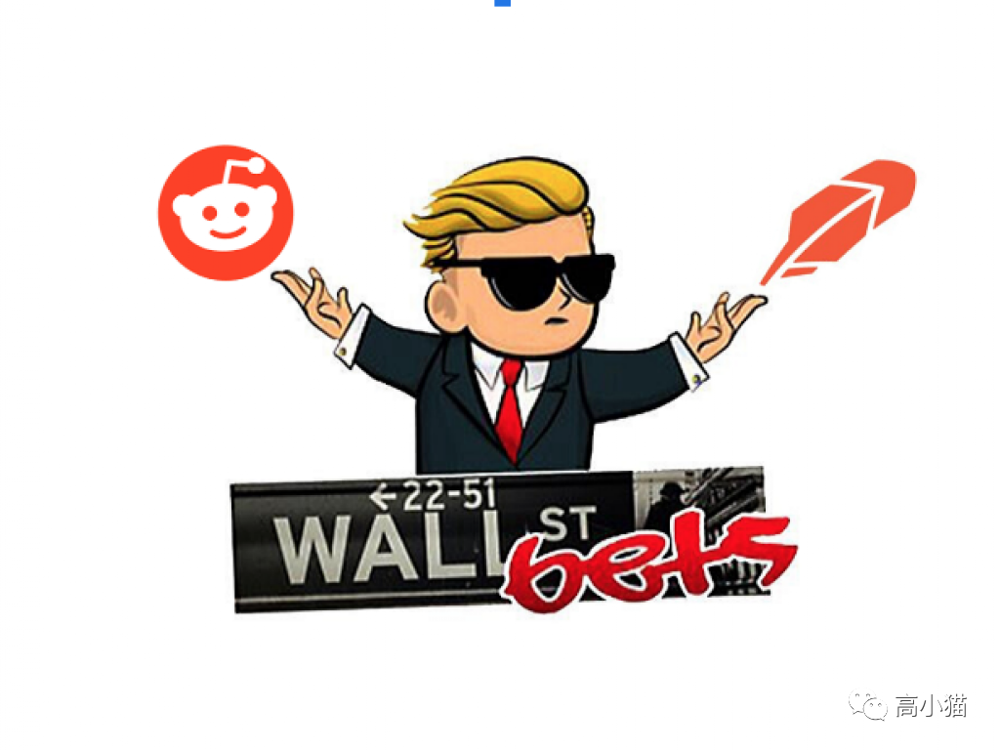
最近WSB这个事件闹得很大。对于没有关注这件事情的人，我先来简单介绍一下背景。
WSB是Reddit上（美国的百度贴吧）的一个股票投资社群，全称为wallstreetbets，网址在https://www.reddit.com/r/wallstreetbets/。
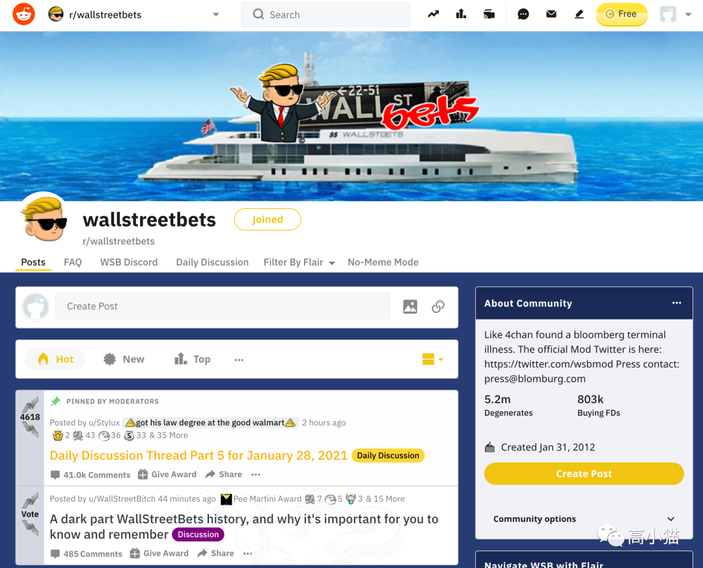
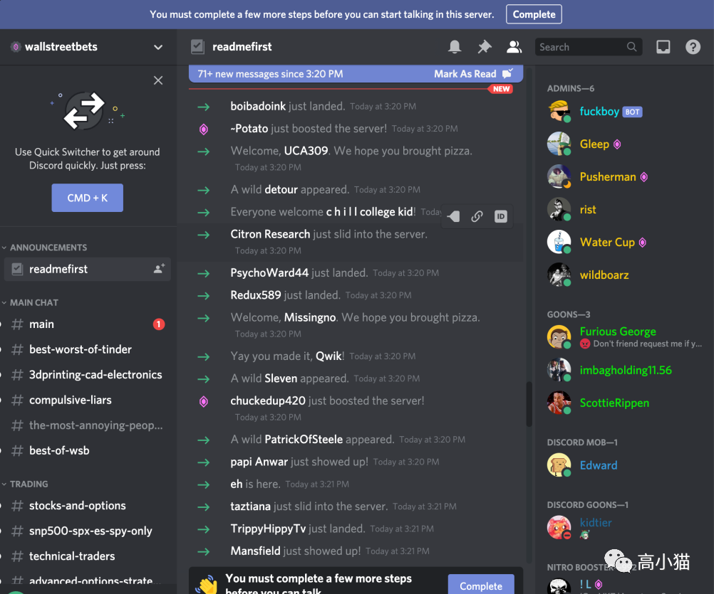
这个社群里的人非常看好一只叫做Gamestop的股票。
这家公司是美国一家老牌的卖游戏相关产品的线下连锁零售店。
这家公司的股票在过去的几年里被一些大的基金做空得很厉害，因为基金普遍觉得这家公司迟早要完蛋了。
从基本面上来看这家公司也确实不怎么行了。不仅负债严重，而且亏损，而且它的主营业务也在夕阳产业。
而WSB社群看好这只股票的原因主要是因为这家公司可能要换一个CEO来改革这家公司了。
由于这个潜在的好消息，Gamestop的股价（股票代号GME）从今年上半年最低的4刀左右，慢慢一路上涨到40多刀。
然后有一个叫香橼的做空了这只股票的基金有点坐不住了，在推特上发表了一番言论，表示你们这帮买GME的买家最终将会是输家，这个股票根本不值这么多钱。
这下WSB社群里的人被彻底惹恼了。
这时候社群里有人发表了一些研究数据，表示GME的股票已经被空头超卖了。按照当前市场的数据，市场上能买到的股票一共只有100股，空头却已经卖了140股。
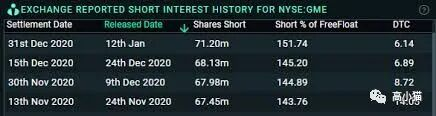
也就是说只要大量买入股票抬高价格，这些空头最终会被轧空，被迫买入股票来平仓，而且不管到时候价格多高都得买。
为了教训一下这些华尔街的大基金，社群里的人们被号召了一起，开始了一场买入GME的运动，目标就是要轧空机构，从他们身上狠狠捞一笔，教训一下华尔街的这些基金。
于是GME先是一路上涨到80刀，后来又再接再厉，最高的时候涨到了431刀。除此以外，其它一些被过度做空的股票，比如AMC，NOK等也在他们的目标之内。
眼看着股价一路上涨，机构就要被收割了（或者一些大的机构据说已经被迫平仓了）。突然出现了一个新的事件。Robinhood（美国这边最大的散户买卖股票的平台）突然宣布停止GME等股票的购买。只许用户卖出股票，但是不允许用户买入股票了。
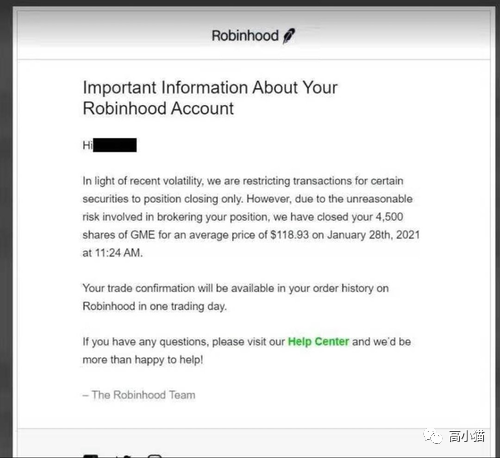
作为一个私人的公司，单方面禁止上面的用户买卖某一个个股，这样的事情我觉得真的触犯到西方价值观的底线了。今天基本上推特和Blind上面都在骂Robinhood。
但是另一方面，并没有更好的方式来解决这个问题。事实上不光光是Robinhood，像是TD Ameritrade, Webull等股票交易平台也禁止了GME等股票的买入。
根据Robinhood官方的说法，是由于最近这些个股的波动太大，因此需要限制这些个股的交易。
不过事实上，是因为做空GME等股票的基金实际上是Robinhood最大的客户之一，因此最终Robinhood还是选择了妥协。
Robinhood这样子做，等于在说，你们散户弄高风险的东西，亏了钱活该。但是我们这些基金要是弄高风险的东西，亏了钱，那我就把桌子都给你掀了。而Robinhood就是这些基金最前面的那一把枪，明白了开始明抢散户的钱。
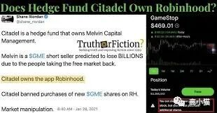
推荐一个视频，是CNBC对Chamath Palihapitiya有关这个事件的一个采访。可以看到建制派等代表基金的力量的态度，以及代表了散户立场的Chamath的反击。
https://vimeo.com/505494564
没想到讲了这么久才讲清楚了这件事情。实际上不光光是这一次的时间，也包括上一次推特把金毛封掉那一次，也显示出这些中心化机构的问题。
如果市场上发生了一些对于这些大的中心化机构不利的黑天鹅事件，这些机构要么可以类似于这次来掀桌子，直接把散户交易的平台给封了，要么可以类似于2008年那样，直接大而不倒，让国家印钱来救。
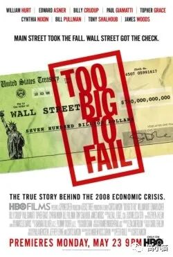
这样造成的结果必然是富人越来越富，穷人越来越穷。
那我们有什么解决办法呢？
我觉得区块链将会是解决方案之一。
第二代区块链，即以太坊，解决的最关键的问题就是合约自由。
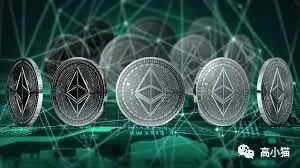
也就是说当你在一个区块链的应用上面设立了一个合约，这个合约按照一个设定的逻辑，运行一些东西的时候，这个应用会干什么是无法随意更改的。
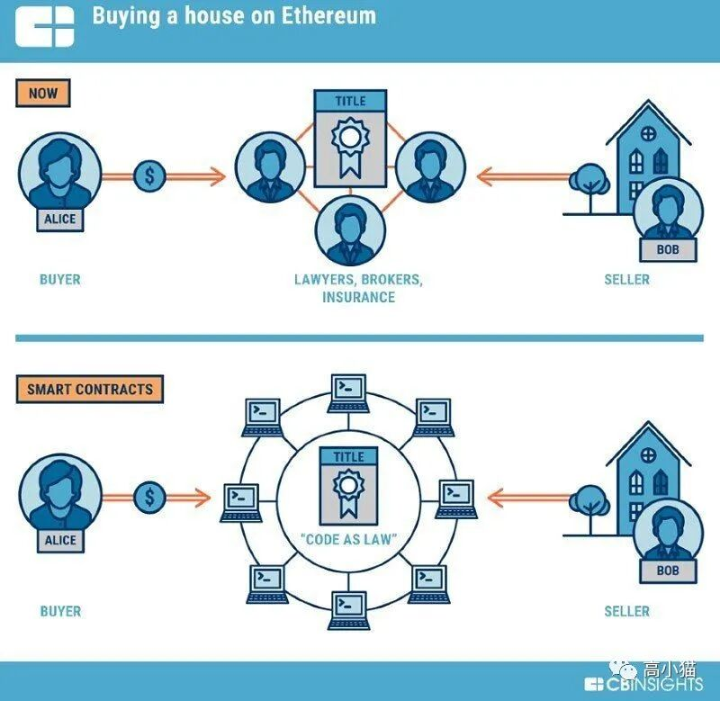
这样说可能有些抽象。举个例子，假设在未来，有一个完全基于区块链的推特被人们普遍采用，一旦这个推特开始运行，没有任何人可以把这个推特的运行停下来，也没有任何人可以在上面删帖。因为它的发帖规则是由合约确定的，无法更改。
它可能会变得很慢，可能会变得很贵，但是这些随着时间的推移都会被慢慢解决。
最重要的是，一旦发帖，加好友等等社交网络程序的规则被合约确定了下来，就再也没有人能改变它。
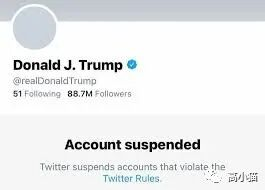
再想象一下，未来如果所有的金融活动都在区块链上运行。
假设一些大的基金冒了不该冒的风险，最终亏了太多的钱需要被清算。这时候不会再有国家拿着老百姓的钱来救这些银行。
一方面清算会被合约铁面无私地执行下去，另一方面，如果大家都是用的区块链资产，是没有办法被多印出来的。
如果国家想救市，必须要去问别人买对应数量的区块链资产。这样印钱就不会是单纯的国家对于老百姓的掠夺，而是始终会有一定的成本。
未来在区块链上的金融产品，比如股票，不再会有散户和机构的这么大的力量悬殊。所有的交易都会是透明的，可以被公开的，而且价格不再会有那么大的歧视。
买卖和资产的流动都会是自由的，不再会被一些中心化的平台单方面屏蔽，出现类似于GME这样的事情。
再想象一下，未来在区块链上运行的uber，不再会有价格歧视的问题，对于所有的乘客和司机，价格都一视同仁。
未来在区块链上运行的搜索引擎，不再会有竞价排名，操纵搜索结果的问题。
….
当然这些都会再很遥远的未来。
今天的区块链还刚刚起步，整个网络还非常稚嫩。就算是这上面最大的应用，BTC，也只是刚刚让这个世界的一小部分人认识到它的价值。
我们眼下还站在类似于互联网1996年的那个阶段，各种不靠谱的应用，类似于1996年的yahoo
这样的小破网站刚刚开始涌现。绝大部分根本没有什么实用价值，都是一些泡沫。
不过这个势头已经启动了，而且一旦启动一定不会转头，一定不会停下来。
过去人们常说，internet is eating the world。
未来我们要说，Decentralized is eating the centralized.
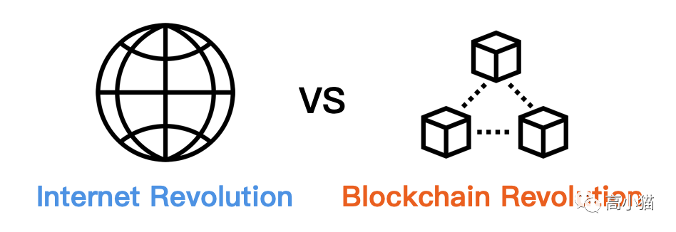
扫码关注我